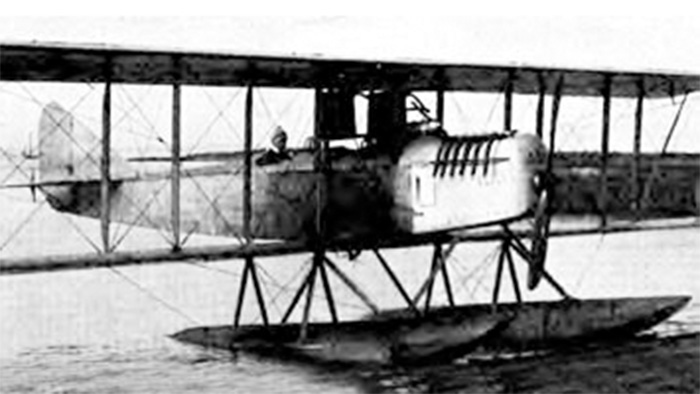

Aeromarine 700

- Разработчик: Aeromarine
- Страна: США
- Первый полет: 1918
- Тип: Торпедоносец
В 1917 году командование ВМС США заказало компании Aeromarine Plane & Motor Company постройку четырех торпедоносцев.
В следующем году в связи с окончанием военных действий контрак сократили вдвое и построили два гидросамолета с номерами
A142 и A143. ики
Aeromarine 700 представлял собой трехместный трехстоечный биплан, оснащенный двигателем Aeromarine K-6 мощностью 1
00 л.с. (75 кВт). В связи с небольшой мощностью силовой установки полезная нагрузка самолета была небольшой, и по
этому он мог нести только модель легких торпед. ики
Обе машины так и не попали в боевые подразделения, а использовались флотом в качестве опытных в экспериментах по
применению авиационных торпед.
| Летно технические характеристики | |
|---|---|
| Модификация | Aeromarine 700 |
| Размах крыла, м | |
| Длина, м | |
| Высота, м | |
| Масса, кг | |
| - пустого самолета | |
| - нормальная взлетная | |
| Тип двигателя | 1 ПД Aeromarine K-6 |
| Мощность, л.с. | 1 х 100 |
| Максимальная скорость , км/ч | |
| Крейсерская скорость , км/ч | |
| Практическая дальность, км | |
| Боевая дальность, км | |
| Максимальная скороподъемность, м/мин | |
| Практический потолок, м | |
| Экипаж, чел | 3 |
| Вооружение: | |